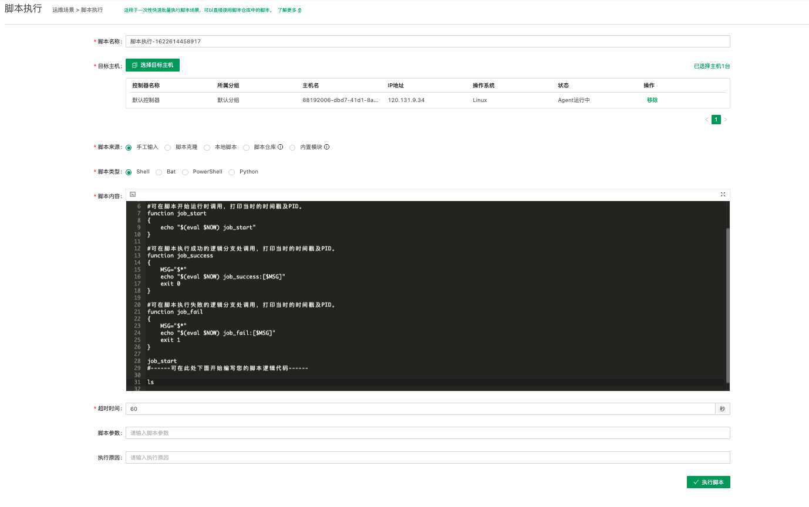
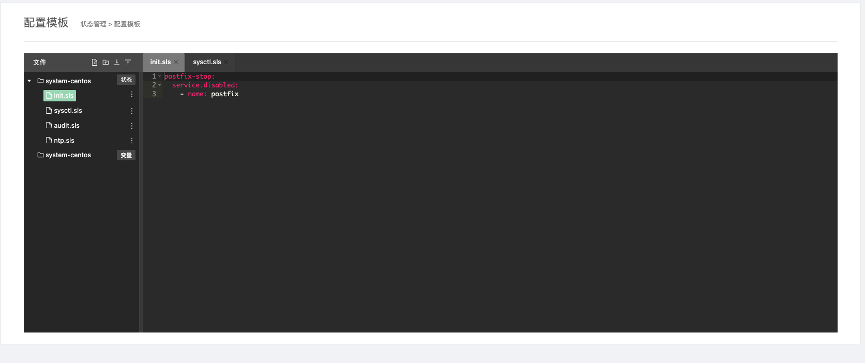
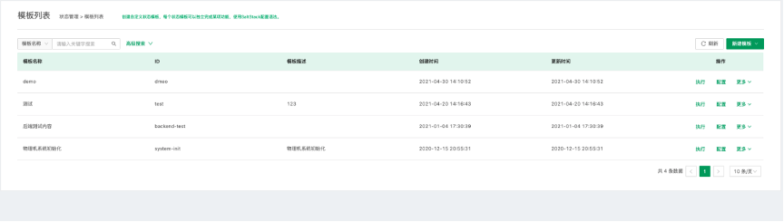
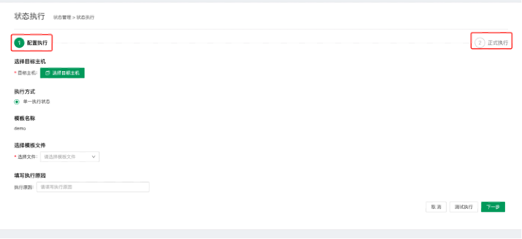
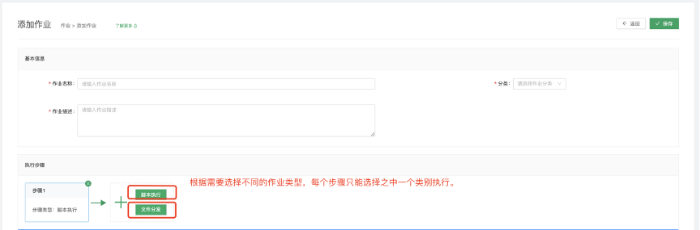

作业平台¶
作业平台是基于管控平台Agent管道基础之上，为用户提供原子操作的平台。支持脚本执行、文件分发、定时任务、状态管理等一系列运维场景，同时支持将零碎的单个任务组装成一个自动化的作业流程。

运维场景¶
运维场景支持用户快速脚本执行和文件分发，同时平台内置了常用的运维作业，并通过作业市场的维度来管理，方便用户根据自己的运维需求来快速编辑作业和执行作业。
作业市场¶
作业市场主要作用是储存用户常用的作业，通过分类的方式帮助用户管理作业。

- 点击查看详情，用户可以查看目标作业的具体步骤和目标执行主机。
- 点击立即执行，用户可以对目标作业进行执行操作。

- 执行原因：填写运行此次作业的执行原因。
- 点击每个步骤，可以查看当前步骤的具体内容。

脚本执行¶
脚本执行主要用于用户进行快速执行一个临时脚本，方便运维做一些及时性操作。

- 脚本名称：系统会自动生成一个名称，用户也可以自定义脚本的名称。
- 目标主机：用户通过这里选择需要执行的主机，这里的主机来源是管控平台的主机管理列表处的主机。
- 脚本来源：用户可以通过选择不同的脚本来源来快速编写脚本。
- 脚本类型：通过选择不同的脚本类型，会生成不同的脚本内容，编写不同的脚本。
- 超时时间：运行脚本所需要的最长时间。
- 脚本参数：输入脚本所需要的参数。
- 执行原因：填写执行此次脚本的原因。
- 点击立即执行，可以查看脚本执行的结果。

点击导出执行记录，可以导出当前执行脚本的日志文件。
文件分发¶
文件分发的目的是方便用户进行一次性的文件传输功能，可以在这里快速的执行并得到结果。

- 点击添加文件，可以选择本地的文件，也可以选择一台服务器上的文件。
- 目标文件：填写目标机器上的绝对路径。添加超时时间，选择目标主机。
- 执行原因：填写执行本次操作的原因。
- 执行结果：结果查看同脚本执行相同。
状态管理¶
状态管理是基于saltstack声明式资源管理方案，帮助用户管理主机的状态。
内置模板¶
内置模板主要用于用户对目标主机进行状态的管理，系统会内置一些常用的模板，便于用户使用。譬如，当需要检测MySQL是否已经安装，或者需要对目标主机进行MySQL的安装，可以通过状态管理进行形式进行管理。

点击编辑按钮，用户编辑当前模板的名称，ID，描述。

点击配置按钮，可以对当前模板进行编辑操作。

模板内有两个文件夹，一个是状态文件夹，用于用户编写对应的文件，一个是变量文件夹，用于用户编写对应的变量文件。
模板列表¶
模板列表中主要内容是用户创建的常用模板，可以进行快速执行，编辑等操作，同时创建模板时也可以通过选择一个内置模板进行复制，然后快速编辑成需要使用的模板。

点击选择新建模板，用户可以选择自定义创建模板，同时也可以选择从内置模板中复制一个模板。

点击执行按钮，进入状态执行界面。
- 第一步：包含选择目标主机，执行方式，模板名称，选择模板文件，填写执行原因。支持用户在进行正式执行之前可以测试执行，方便用户用于校验。

- 第二步：查看执行结果。执行结果包含当前状态管理模板执行的详细日志。

状态历史¶
状态历史主要用于用户查看历史执行的状态管理模板。

点击查看详情，可以查看每条执行的详细信息。

作业管理¶
如果一个操作场景需要多个步骤串联执行时，如果手工一个个去点击执行，效率实在太低了！并且没有办法沉淀下来，方便后续持续使用和维护。作业平台的作业管理功能可以很好的解决这个问题。
作业编排¶
作业编排是作业平台的核心能力之一，理念是通过流程编排能力，将运维操作场景中涉及到的多个脚本执行或者文件分发组合成一个作业模板，这个作业模板尽可能把场景相关的共性逻辑都包含进去，然后再根据实际使用场景衍生出相应的执行方案。

- 点击新建按钮，进入新建界面。

- 选择其中一种执行方案，出现步骤具体执行细节的填写，字段同脚本执行或者文件分发类似。

- 点击保存，可以到列表出进行执行操作。作业编排支持分享操作，可以通过分享给其他成员，达到最大化的效率执行。
定时作业¶
定时作业功能是用来管理定时执行的作业任务。保留了Linux原生的Crontab定时作业使用习惯，让运维人员能够更平滑、快速的上手。
新建定时作业

- 任务名称：用户可以自定义任务的名称。
- 选择作业：选择一个可以执行的作业。
- 定时规则：用户可以选择周期性的任务，也可以选择某个时刻执行一次的任务。
- 表达式：采用了和 Linux Crontab 同样的表达式，让使用门槛更低，上手更容易。
- 过期时间：选择停止此定时任务的时间。
- 是否启用：选择是表示立即启用。
- 备注：用户可以填写一些备注信息。
暂停定时作业

执行历史¶
执行历史主要用于用户查看历史执行的作业详情。
- 点击批量导出，可以选择指定的作业导出执行的详情文件。

平台设置¶
脚本仓库¶
脚本仓库主要用于用户对脚本的保存和管理，同时支持多用户协同分享和复制作业的功能。
点击新建作业

- 脚本名称：用户可以自定义脚本的名称。
- 版本号：由系统自动生成版本号。
- 脚本来源：支持三种模式，手工输入、脚本克隆、本地脚本。
- 手工输入是指用户自己编写好脚本内容进行上传。
- 脚本克隆是指用户选择一个脚本，然后对选定的脚本进行编辑，生成新的版本。
- 本地脚本是指用户可以上传本地的脚本，然后进行编辑和储存。
- 脚本类型：根据不同的系统选定不同脚本类型。
- 脚本内容：用户填写脚本内容。
点击设置权限

管理员可以选择当前脚本哪些用户可以使用。
点击同步

用户可以将此脚本同步到某个作业中，替换指定的脚本。
资源管理¶
资源管理主要用于用户管理文件，脚本，或者一些常用的资源。用户通过目录的形式管理。点击上传文件，选择本地的文件，可以为其他的用户方便下载使用。

作业分类¶
作业分类主要是用于管理员对作业市场中的作业进行类别管理。

管理员可以对作业的分类进行编辑、删除、添加。